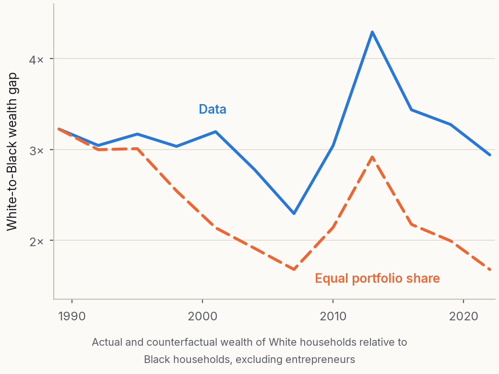
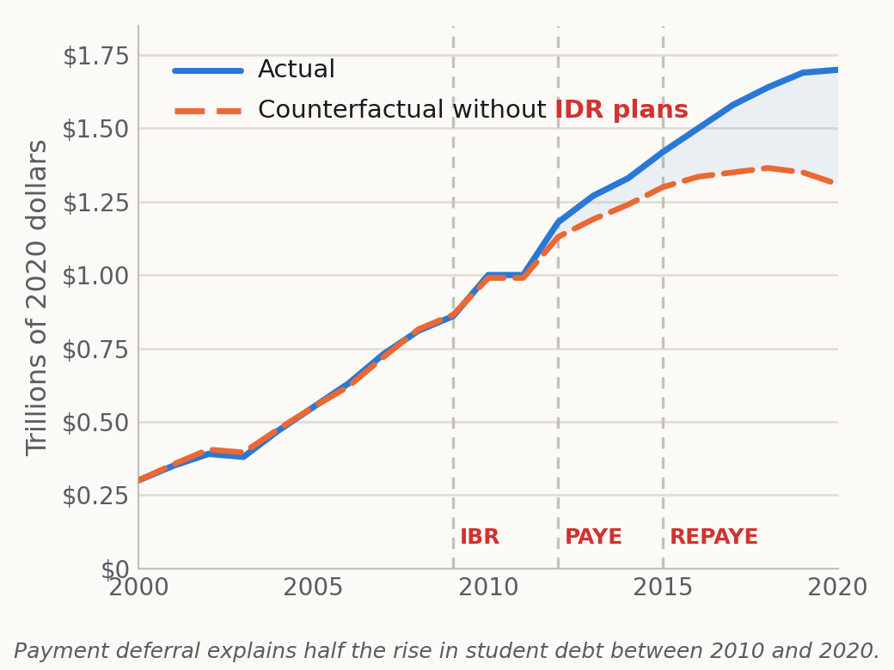
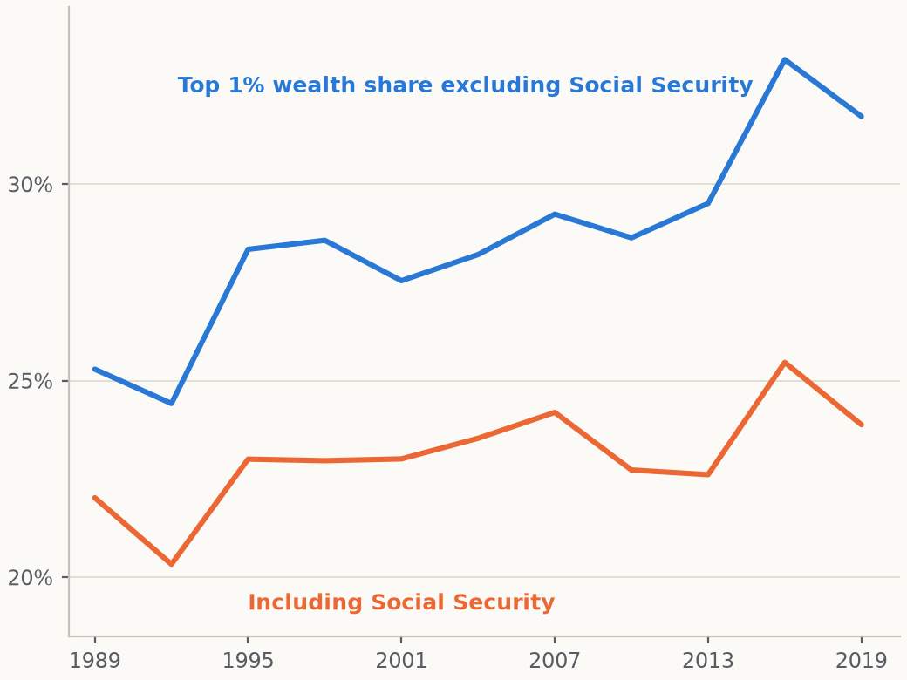
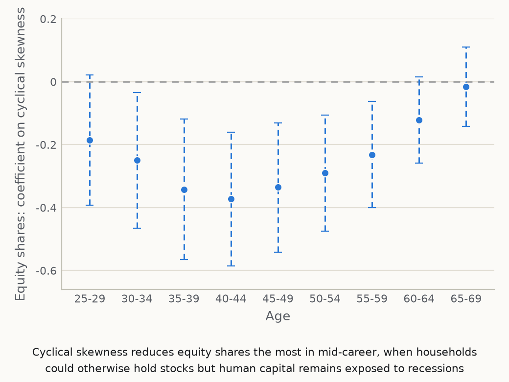
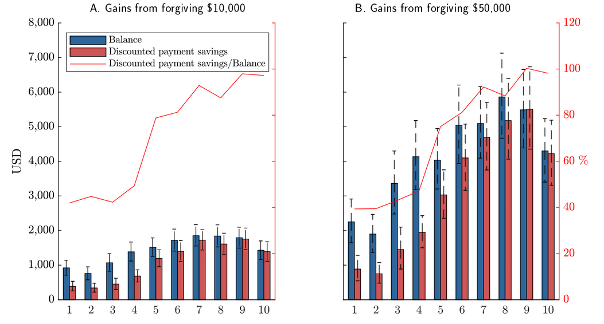
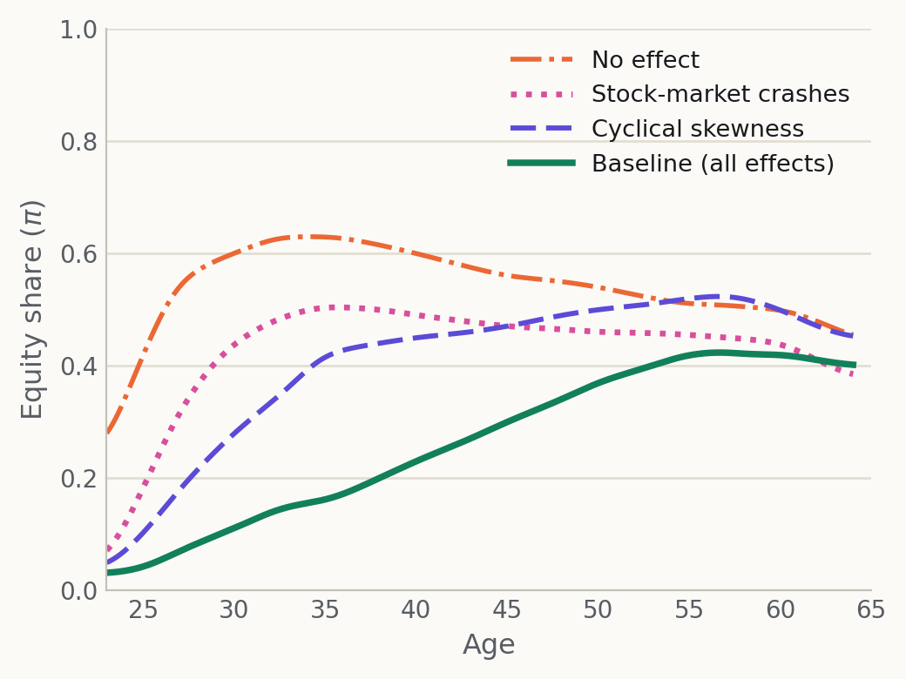
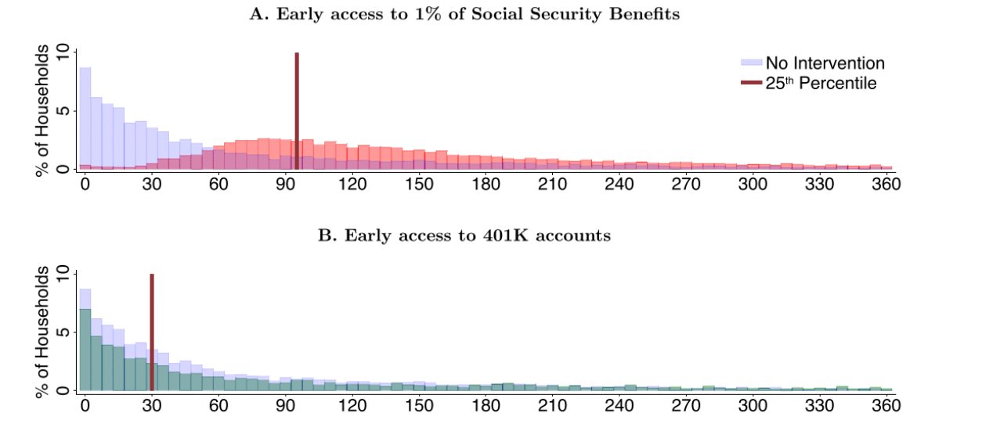
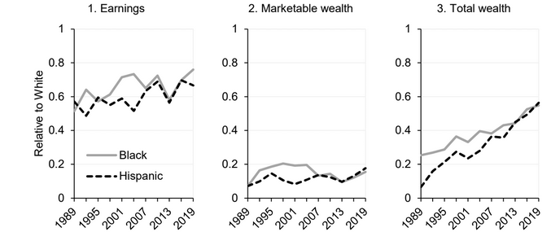

2022
Quantifying Reduced-Form Evidence on Collateral Constraints
Journal of Finance, 2022
Estimates output losses of 7.1% and TFP misallocation losses of 1.4% arising from collateral constraints.
Research
Peer-reviewed articles in finance and economics, with book chapters and other scholarly work.
Review of Financial Studies, 2026
Explores how disparities in economic factors explain differences in Black and White households' balance-sheet composition, finding that such factors account for roughly half the differential between the racial wealth and income gaps.

Journal of Financial Economics, 2026
Shows that the expansion of income-driven repayment accounts for roughly half of the increase in student debt since 2010, and analyzes its consumption-smoothing and welfare effects.

Journal of Finance, 2025
Demonstrates that top wealth shares remain relatively stable over three decades once Social Security wealth is properly included in the measurement.

Journal of Finance, 2024
Documents how workers facing higher tail income risk during poor equity-market performance maintain lower portfolio equity shares.
Empirical companion paper of Catherine (RFS, 2022).

Journal of Financial Economics, 2023
Shows that forgiveness policies disproportionately benefit higher earners and provide substantially smaller benefits to Black and Hispanic households. In the presence of income-driven repayment plans, balance reductions overstate the true gains from forgiveness at the lower end of the distribution.

Journal of Finance, 2022
Estimates output losses of 7.1% and TFP misallocation losses of 1.4% arising from collateral constraints.
Review of Financial Studies, 2022
Shows that introducing tail income shocks during recessions—cyclical skewness—strongly reduces workers' optimal equity holdings, reconciling the predictions of standard portfolio-choice models with the data.
Theoretical companion paper of Catherine, Sodini and Zhang (JF, 2024).

Journal of Financial Economics, 2022
Uses French administrative data to value the option of returning to employment for entrepreneurs, estimating this option to be worth 6.4× the average net wage.
Journal of Public Economics, 2020
Analyzes household cash shortfalls and evaluates early access to Social Security benefits against alternative pandemic-relief policies.

Chapter in Reducing Retirement Inequality: Building Wealth and Old-Age Resilience, Oxford University Press, 2025
Examines how including Social Security wealth narrows measured racial wealth disparities over three decades.

National Tax Journal, 2024
Updates earlier research on student loan forgiveness, examining post-2020 policy developments.